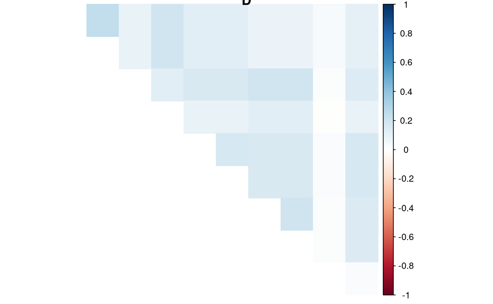
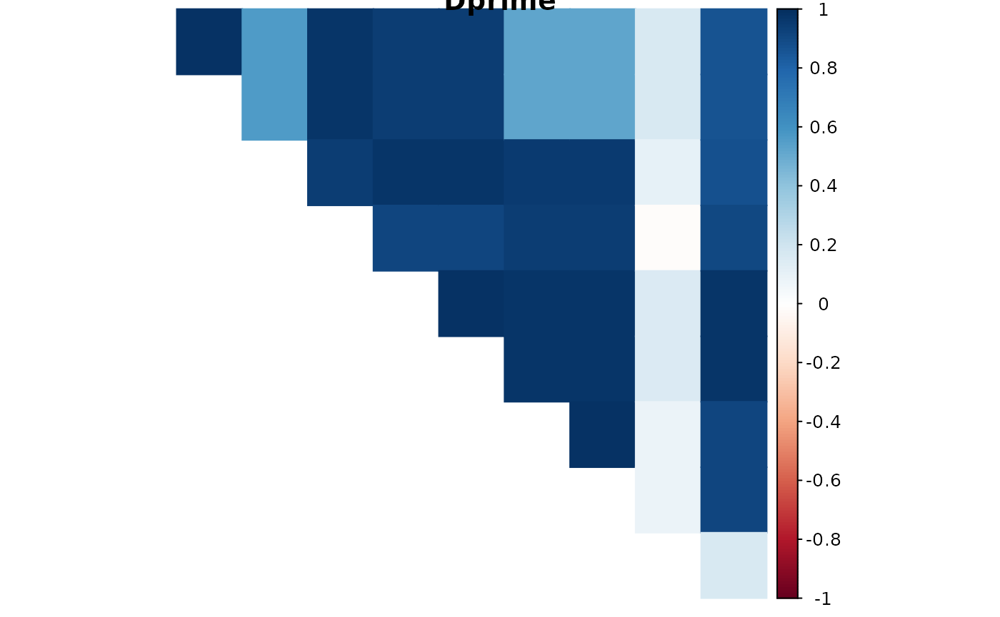
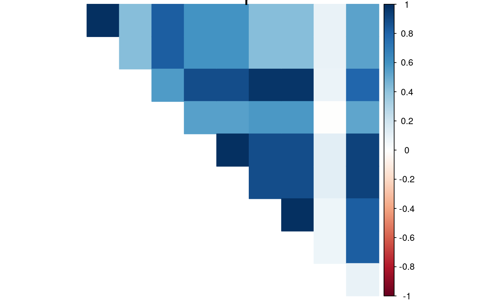
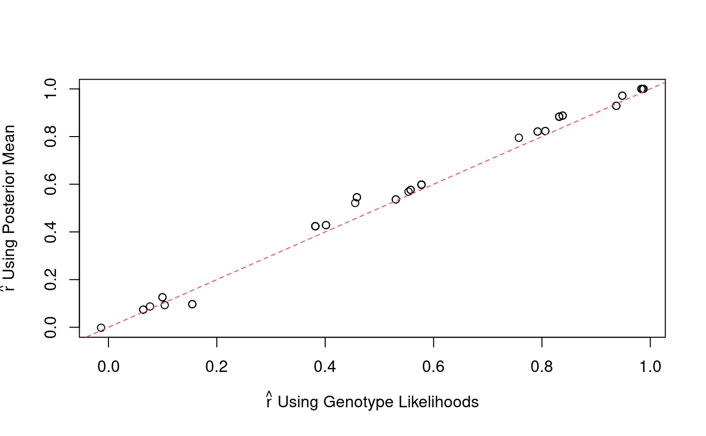
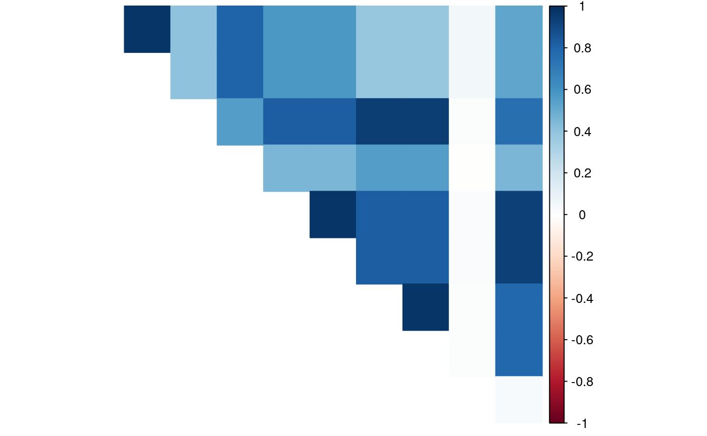

Abstract
We use the data from Uitdewilligen et. al. (2013) to demonstrate how to obtain LD estimates using the ldsep package. The R chunks are only evaluated if updog (>= 2.0.2) is installed.
Analysis
We will first load the ldsep package. We will also need to load the updog (Gerard et. al., 2018; Gerard and Ferrão, 2020) and corrplot (Wei and Simko, 2017) R packages for this vignette:
The data come from 10 (mostly arbitrary) SNPs from the tetraploid potato dataset of Uitdewilligen et. al. (2013). These SNPs are located close to each other on the same super scaffold. We genotyped these SNPs using the multidog() function from the updog R package. The uit object is the resulting output.
In order to estimate LD, we need to extract the genotype log-likelihoods from the updog fits using format_multidog() from the updog package.
vvec <- paste0("logL_", 0:ploidy) vvec #> [1] "logL_0" "logL_1" "logL_2" "logL_3" "logL_4" genoarray <- format_multidog(x = uit, varname = vvec) dim(genoarray) #> [1] 10 84 5
The array, genoarray, contains the genotype log-likelihoods with dimensions (SNPs \(\times\) individuals \(\times\) dosage). So genoarray[i, j, k] contains the genotype log-likelihood of SNP i for individual j at dosage k-1.
It is not necessary to use the genotype log-likelihoods from updog. There are many other genotyping methods that produce genotype log-likelihoods and these could be used instead, as long as you have formatted the genotype log-likelihoods in terms of an array as above.
Let’s estimate all pairwise LD using these genotype log-likelihoods:
ldout <- mldest(geno = genoarray, K = ploidy, type = "gam")
We can visualize LD with plot.lddf().
plot(x = ldout, element = "D")

plot(x = ldout, element = "Dprime")

plot(x = ldout, element = "r")
We can also obtain these LD estimates in matrix form by using format_lddf().
ldmat <- format_lddf(obj = ldout, element = "D") ldmat[1:4, 1:4] #> PotVar0029907 PotVar0029908 PotVar0029910 PotVar0029911 #> PotVar0029907 NA 0.2449746 0.09149879 0.1996393 #> PotVar0029908 NA NA 0.09149879 0.1996393 #> PotVar0029910 NA NA NA 0.1260232 #> PotVar0029911 NA NA NA NA
Though not generally recommended, we get very similar performance in this case when we use posterior mean genotypes to obtain LD estimates.
pmmat <- format_multidog(x = uit, varname = "postmean") ld_pm <- mldest(geno = pmmat, K = ploidy, type = "comp") plot(x = ld_pm, element = "r")

r_hap <- format_lddf(obj = ldout, element = "r") r_pm <- format_lddf(obj = ld_pm, element = "r") plot(x = r_hap, y = r_pm, xlab = expression(paste(hat(r), " Using Genotype Likelihoods")), ylab = expression(paste(hat(r), " Using Posterior Mean"))) abline(0, 1, lty = 2, col = 2)

We can obtain shrunken LD estimates with ldshrink(). This shrinkage uses adaptive shrinkage (Stephens, 2016) as proposed in Dey and Stephens (2018).
shrunkcor <- ldshrink(obj = ldout) corrplot(corr = shrunkcor, type = "upper", method = "color", diag = FALSE, is.corr = TRUE, tl.pos = "n")

To estimate pairwise LD along a sliding window, use sldest():

References
- Dey, Kushal K., and Matthew Stephens. “CorShrink: Empirical Bayes shrinkage estimation of correlations, with applications.” bioRxiv (2018): 368316. DOI:10.1101/368316
- Gerard, David, Luís Felipe Ventorim Ferrão, Antonio Augusto Franco Garcia, and Matthew Stephens. “Genotyping polyploids from messy sequencing data.” Genetics 210, no. 3 (2018): 789-807. DOI:10.1534/genetics.118.301468
- Gerard, David, and Luís Felipe Ventorim Ferrão. “Priors for genotyping polyploids.” Bioinformatics 36, no. 6 (2020): 1795-1800. DOI:10.1093/bioinformatics/btz852
- Stephens, Matthew. “False discovery rates: a new deal.” Biostatistics 18, no. 2 (2017): 275-294. DOI;10.1093/biostatistics/kxw041
- Uitdewilligen, Jan GAML, Anne-Marie A. Wolters, B. Bjorn, Theo JA Borm, Richard GF Visser, and Herman J. Van Eck. “A next-generation sequencing method for genotyping-by-sequencing of highly heterozygous autotetraploid potato.” PloS one 8, no. 5 (2013): e62355. DOI:10.1371/journal.pone.0062355
- Taiyun Wei and Viliam Simko (2017). R package “corrplot”: Visualization of a Correlation Matrix (Version 0.84). Available from https://github.com/taiyun/corrplot